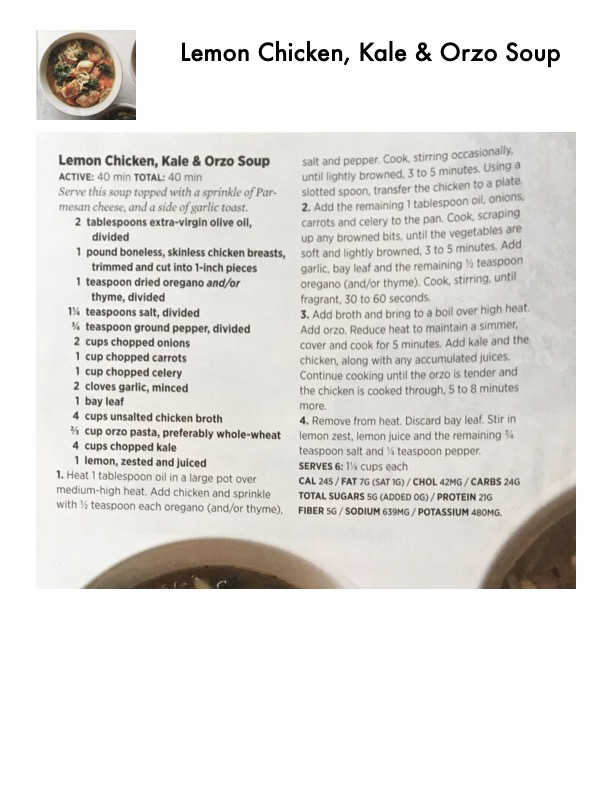

Lemon Chicken, Kale & Orzo Soup

Original cookbook page 43
Serve this soup paired with a sprinkle of Parmesan cheese, and a side of garlic toast.
Prep: 40 minutes • Total: 40 minutes
Ingredients
- 2 tablespoons extra-virgin olive oil, divided
- 1 pound boneless, skinless chicken breasts, trimmed and cut into 1/2-inch pieces
- 1 teaspoon dried oregano and/or thyme, divided
- 1 1/2 teaspoons salt, divided
- 1/8 teaspoon ground pepper, divided
- 2 cups chopped onions
- 1 cup chopped carrots
- 1 cup chopped celery
- 2 cloves garlic, minced
- 1 bay leaf
- 4 cups unsalted chicken broth
- 3/4 cup orzo pasta, preferably whole-wheat
- 4 cups chopped kale
- 1 lemon, zested and juiced
Instructions
- Heat 1 tablespoon oil in a large pot over medium-high heat. Add chicken and sprinkle with 1/2 teaspoon each oregano (and/or thyme), salt and pepper. Cook, stirring occasionally, until lightly browned, 3 to 5 minutes. Using a slotted spoon, transfer the chicken to a plate.
- Add the remaining 1 tablespoon oil, onions, carrots and celery to the pan. Cook, scraping up any browned bits, until the vegetables are soft and lightly browned, 3 to 5 minutes. Add garlic, bay leaf and the remaining 1/2 teaspoon oregano (and/or thyme). Cook, stirring, until fragrant, 30 to 60 seconds.
- Add broth and bring to a boil over high heat. Add orzo. Reduce heat to maintain a simmer, cover and cook for 5 minutes. Add kale and the chicken, along with any accumulated juices. Continue cooking until the orzo is tender and the chicken is cooked through, 5 to 8 minutes more.
- Remove from heat. Discard bay leaf. Stir in lemon zest, lemon juice and the remaining 1/4 teaspoon salt and 1/8 teaspoon pepper.
Recipe #43 from collection